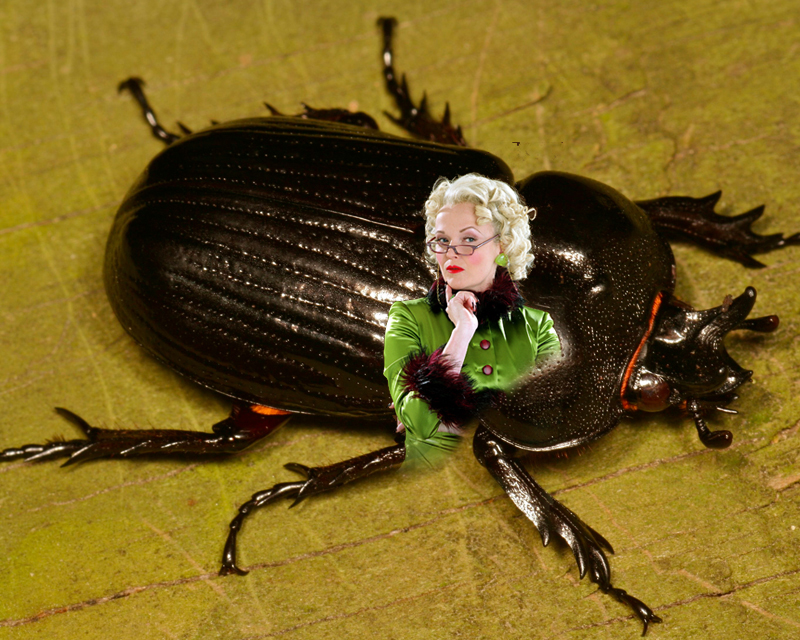
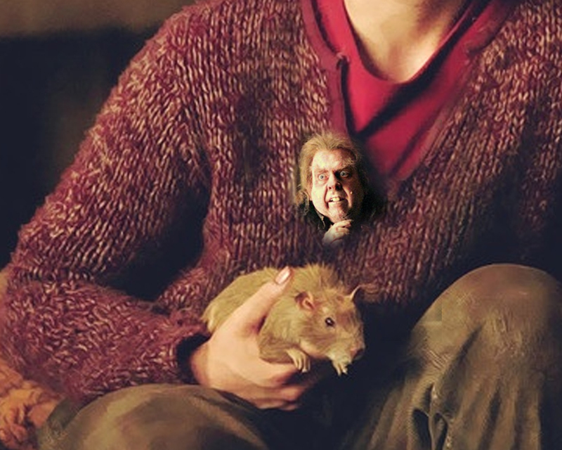
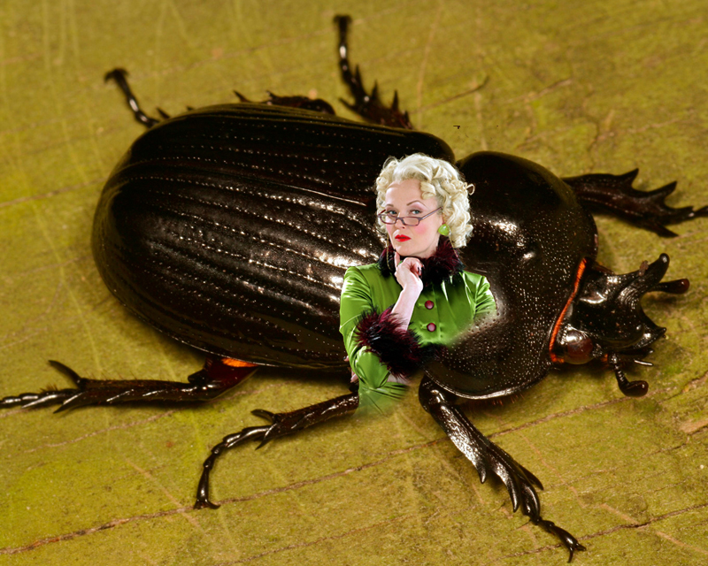
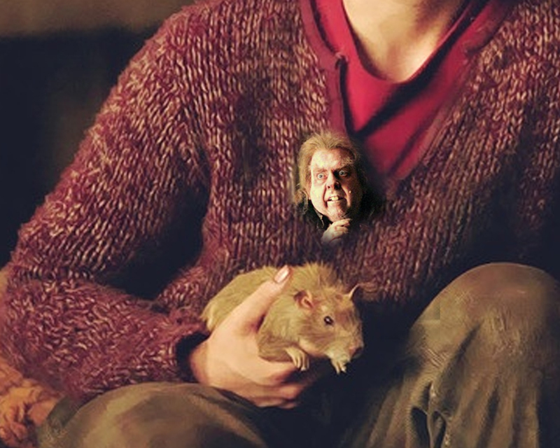

The Animagus Detector Ring
This one of a kind diamond ring reveals the presence of any animagi within 15 feet (4.5 meters).
Never wonder if an animagus is snooping in on your conversation again! This diamond will reflect the image of any animagi, hidden or not.